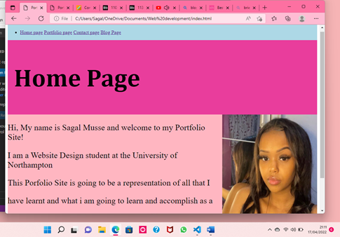

01/04/2022
Day 1 of Starting Porfolio Site.
Firstly i started off by reading the Assignemnt breif and seeing what pages
are needed what what i need to start with. I started of by creating a folder Namining it
Assignmnet1-Porfolio Site, in the folder i then created a file named index.html which is
the first page of the Porfolio site 'Home Page'
16/04/2022

Day 16 of Creating my Portfolio Site
By day 16 which was the day before submission day i was mostly done with my site
Everything was basically done with the site all i has to do was make the site responsive
as right now it was only for desktop and i also was cheking through all my files
making sure there are no errors.